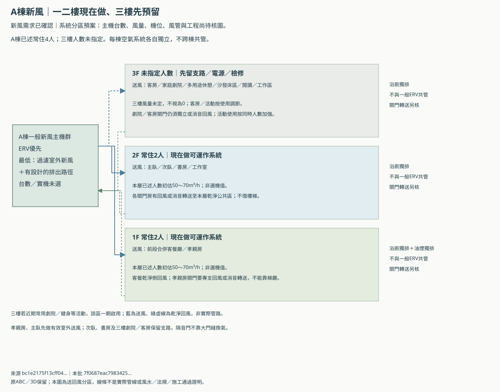
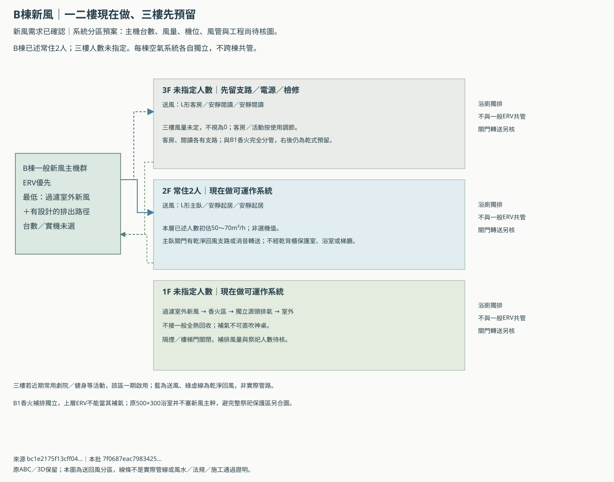
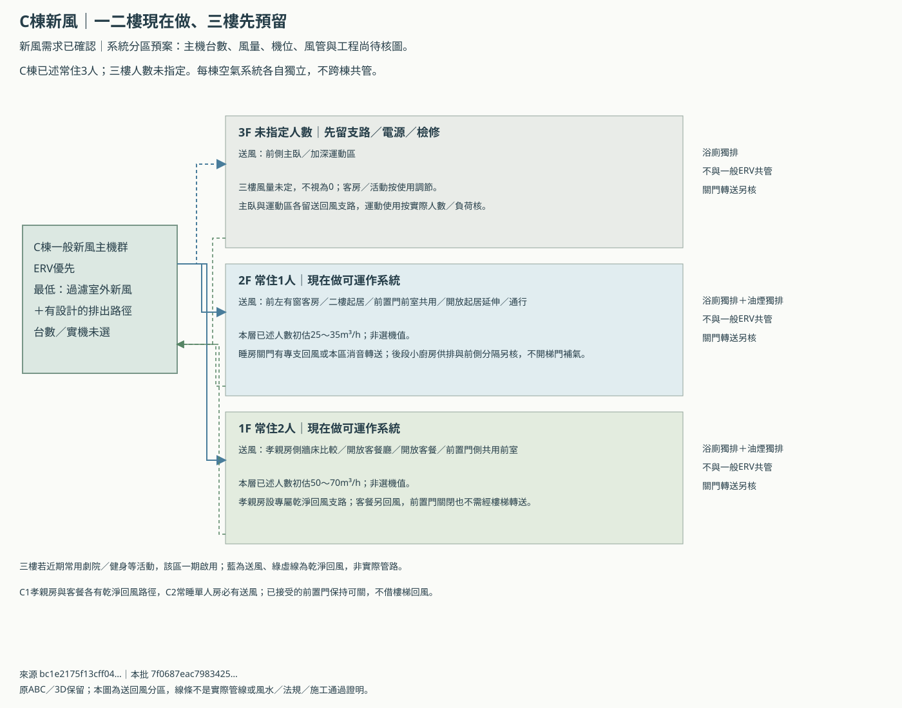

ABC都納入全熱交換；最低也要有可運作的新風系統
屋主已確認通風需求及一、二樓已述常住人數。 三棟各自獨立，全熱交換優先；若採新風機備案，仍要有過濾室外進氣、逐房分配、關門回風／轉送及設計好的排出路徑。
這次確認沒有擴大為採用現有格局、無窗公衛、縮小面積或指定機型。主機位置、實際風量／靜壓、台數、風管、孔位與工程仍待核；原ABC及3D保留。
先做常睡的一、二樓，三樓保留未來條件
| 棟別 | 1F | 2F | 常住已述合計 | 25～35m³/h每人初估 |
|---|---|---|---|---|
| A | 2人 | 2人 | 4人 | 100～140m³/h |
| B | 燒香；祭祀人數未定 | 2人 | 2人＋祭祀另核 | 50～70m³/h；香火另加 |
| C | 2人 | 1人 | 3人 | 75～105m³/h |
25／30／35m³/h每人是本輪初估比較假設，不是法定風量或選機值；還要核背景通風、訪客／三樓活動、局部獨排補氣、髒濾網與實際管路靜壓。A二樓2人是整層，不在主臥、次臥、書房各重複加2人。
白天A四人或C三人集中客餐時，新風需能分配到使用區；夜間轉向各睡房。已述同一批人不能在每個房間再重複累加，但客房／劇院／運動的額外來客尖峰要另核。B一樓香火通風不能由樓上2人的初估代替。
不裝、或只留插座，最可能後悔的地方
| 現在做，避免日後拆裝 | 設計要達到的效果 |
|---|---|
| 一、二樓常睡房各自有效送風 | 房門關上、客廳感測正常時，睡房仍有換氣；C2單人房也不漏 |
| 關門回風／消音轉送 | C前置門與樓梯門可關，不靠開門或大門縫保持風量 |
| 完整主機及濾網拆換空間 | 不放床上方、不借照護轉位或MDF、不能只留一個檢修洞 |
| 三樓支路／主幹／電源／檢修 | 先留可啟用條件，人數未指定不代表未來不用；台數仍可比較 |
| B1香火專屬補排與隔煙 | 煙不進一般ERV回風，也不被抽向樓梯及樓上臥室 |
| 濾網、送排平衡及濕度管理 | 有全熱不等於有除濕，標示微正壓不等於獨排加強時仍有足量補氣 |
預算有限時，先保住已經常睡的房間、新風可到達、關門回風、B香火分管及實際檢修；三樓先做封口支路與可用空間。主機可以比較配置，結構／風管／檢修條件留錯，裝潢後補做更容易影響房間與照護動線。
三樓若劇院、閱讀、健身或客房近期就會常用，該區須一期啟用；不常睡人不等於可以沒有通風。「先預留」只適用尚未使用的區域，不是建議已使用時只留管。
三棟各自送回風，不跨棟共用空氣
這三張是系統分區圖，線條沒有對應實際房屋風管座標，不能當成已完成路由或機房已放得下。





有全熱，浴室補氣仍然要計算
| 示意工況 | 室外送風 | ERV排風 | 局部獨排 | 額外補氣 | 機械淨差m³/h |
|---|---|---|---|---|---|
| ERV平衡低速示意 | 120 | 120 | 0 | 0 | 0 |
| 同一ERV＋浴室120獨排 | 120 | 120 | 120 | 0 | -120 |
| 微增送風10＋浴室120獨排 | 130 | 120 | 120 | 0 | -110 |
| 另補120配合浴室120（容量未核） | 120 | 120 | 120 | 120 | 0 |
| 僅新風120、無已定排出 | 120 | 0 | 0 | 0 | 120 |
| 僅新風120＋浴室120示意 | 120 | 0 | 120 | 0 | 0 |
| 油煙600及浴室120同開示意 | 120 | 120 | 720 | 0 | -720 |
| B1香火補排量尚未核 | 60 | 60 | 未定 | 未定 | 無法計算 |
平衡ERV送120、排120，本身不提供額外120給浴室獨排；若只多送10，浴室仍可能缺110。上述是機械風量差，不能直接換算壓差，也不證明零差就已平衡或空氣品質合格。新風機只送不排也需要明確的排出路徑，不能依賴未知漏風。
本案將一般ERV乾淨回風、浴廁獨排、油煙及B香火分管。這是本案保守系統條件，並非宣稱所有品牌ERV都不能接浴室；具體可接場所仍依實際安裝手冊。香火排氣及油煙不接一般ERV回收。
B棟原400×200補氣構造未定案：新風提供氣源，但進浴室的門內轉送／阻視／聲學仍要核。原500×300井只預算兩條浴室排氣，沒有容納ERV送回風主幹或主機。全熱不得借神明堂乾背櫃保護室當主機房，機位與新主幹另合圖。
C棟維持前置門可關；孝親房與客餐各自有乾淨回風路徑，不用開樓梯門補氣。後段小廚房及浴廁有自己的獨排，不能把味道送回睡房。
請建商同範圍報兩案，現在不鎖死台數
| 方案 | 比較台數，非採購數量 | 好處 | 代價 |
|---|---|---|---|
| 每棟獨立主機，分層分支可調節；B1香火另系統 | 初期ERV示意3台；B1獨立補排及浴廁另計 | 機台／濾網較少 | 跨層送回風主幹、低速調節與防火／噪音／檢修要另排，不能借既有浴室井 |
| 常用層各自小機，三樓先預留；B1香火另系統 | 初期ERV示意5台；B1獨立補排及浴廁另計 | 常用樓層可獨立運轉、少跨層主幹 | 主機／濾網／外牆開口與維護成本較多；不代表實際一定五台 |
原A圖說的品牌與Ø100～150mm套管只是舊文字預留。官方薄型產品例的本體長約1.23m，還要有抽濾網、管接與整機搬出空間；不能因房子有一個孔，就認定全熱已放得下。那個產品只作尺寸參考，未選型。
高雄濕熱季節，全熱回收能量也不等於主動除濕；仍要計室外含濕量、空調潛熱、保溫冷凝與必要除濕。睡房CO2不能只靠客廳回風感測，PM2.5／濾網、夜間風噪與關門實測也要一起核。
MDF／IDF的設備散熱仍是獨立負荷，新風或全熱不當冷氣；電機櫃也不拿來作其他房間的補氣或回風通道。
三棟同範圍建商回覆表／關門、夜間及同時排風驗收表／風量差示意數據／分區與來源／完整說明／原B排濕工程預案。
參考：DOE通風系統原理、PNNL送排與補氣、生原官方薄型產品／安裝提醒。外國資料只作原理參考，不當本案台灣法規。
bc1e2175f13cff043deeb725e190a3b59908810f58661d9efadec05efbca9a5e本批
7f0687eac7983425b5307f04ba6e813f3bb7c46acddba7914f7b137e6af5428d｜通風需求已確認，尚未選型或取得施工／風水核可；未執行瀏覽器或WebGL。